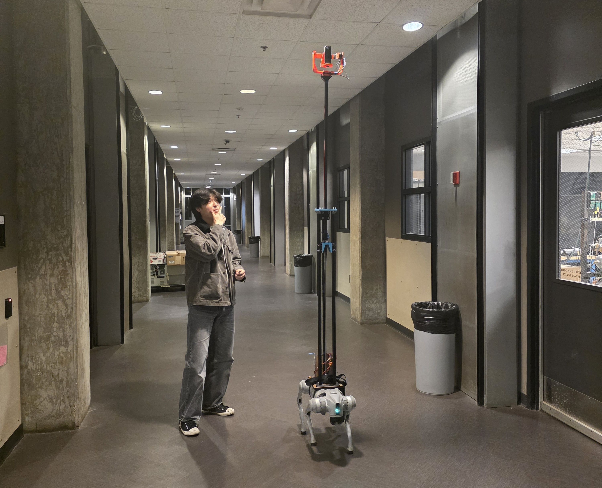

Team capstone · Aug–Dec 2025
Stabilized camera rig
A height-adjustable camera payload developed by our capstone team for a quadruped robot. My contributions included concept selection, gimbal design and drawings, and structural analysis.